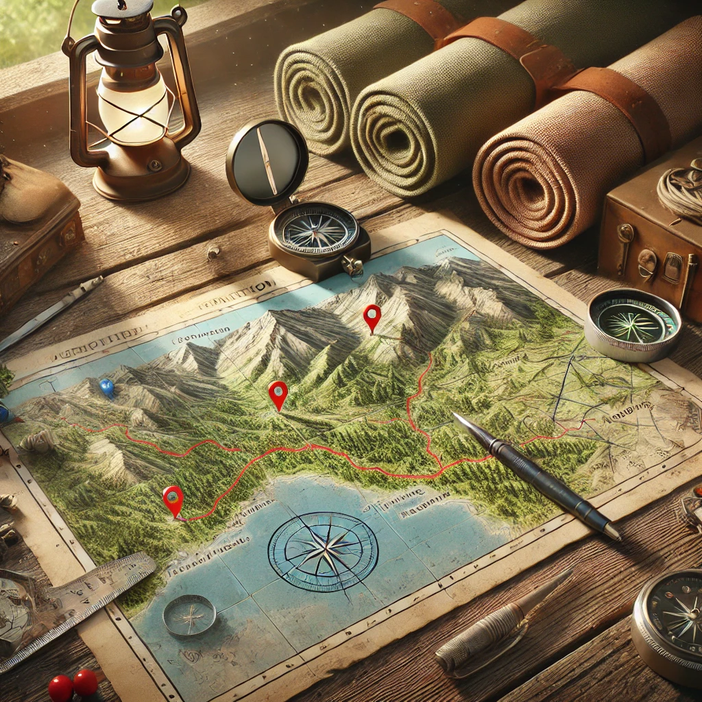

Din webbläsare har inte stöd för video.
Hem
Förberedelser
Främja lokalbefolkningen
Ekologisk hållbarhet
Om oss
Utforska mer
Förberedelser
Packningslista
Skapa din packningslista

Destination
Att välja destination
Quiz
Testa dina kunskaper i hållbar turism
Främja lokalbefolkningen
Packningslista
Upptäck våra nationella minoriteter på kartan
Ekologisk hållbarhet
Om oss